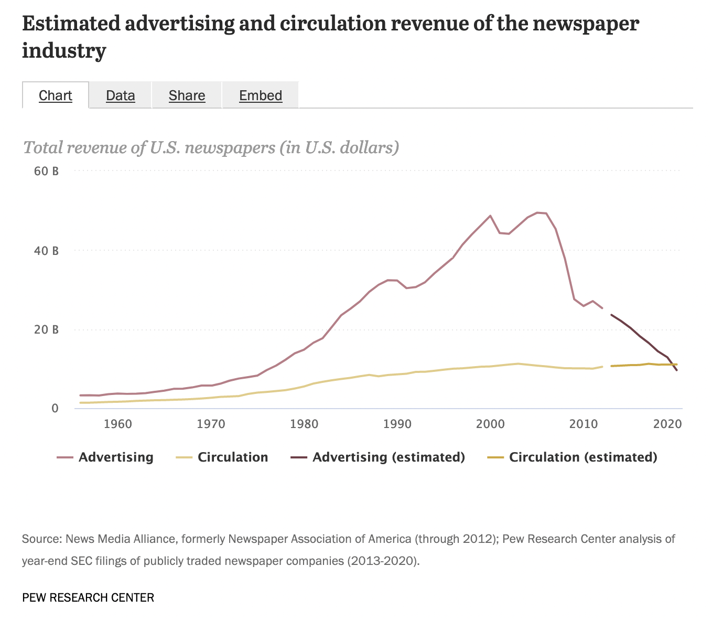

| The roots of media on the internet today: The 90s | |
|---|---|
| A selection of events that got us to where we are today with news companies on the internet. | |
| Year | Event |
| 1990 | Oct. 1: GEnie, the online service owned by General Electric, announces it will offer unlimited night and weekend access for $4.95 a month. It has 200,000 subscribers. |
| 1990 con't | October: Access Atlanta becomes local dialup system offering classifieds, the business section and movie reviews. Cost: $6.95 per month. |
| 1990 con't | Oct. 15: Rocky Mountain News in Denver launches an 8-week trial of Ala Carte Edition, a mainframe-based videotex system. It closes Dec. 15. |
| 1990 con't | Dec. 13: The Electronic Trib, first multi-line, PC-based electronic newspaper system, is launched by The Albuquerque Tribune using BBS software and a 286-12 PC. Screen shot |
| 1990 con't | December: USA Today and Prodigy announce an agreement to create classified advertising on Prodigy. |
| 1991 | Jan. 26: E&P article says "such daily newspapers" as the Ft. Worth Star-Telegram, Omaha World-Herald, Newsday, Rocky Mountain News and Atlanta Journal-Constitution offer local videotex services. |
| 1991 con't | February: Omaha World Herald closes its videotex service saying, "The public just didn't buy it." |
| 1991 con't | June: Prodigy, overwhelmed with E-mail, begins charging users who send more than 30 messages a month. Subscribers are furious. |
| 1991 con't | Sept. 6: Despite the E-mail debacle, Prodigy boasts 1 million accounts less than a year after launch. |
| 1991 con't | November: Tribune Co. says it will offer Chicago Online, an America Online service combining info from all its Chicago media properties. Its Orlando and Ft. Lauderdale papers will follow, Tribune Co. says. |
| 1992 | May: Chicago Online, the first newspaper service on America Online, is launched by the Chicago Tribune. |
| 1992 con't | The St. Louis Post-Dispatch launches Post-Link, a service based on the StarText software. |
| 1992 con't | NAA reports 11 newspapers have an online presence in the U.S. and Canada and more than 250 offer voice information services. |
| 1992 con't | February: Gannett's Florida Today launches on CompuServe. Content focuses on U.S. space program. |
| 1992 con't | June 9: Congress removes restrictions prohibiting commercial use of the Internet. |
| 1992 con't | November: Delphi becomes the first consumer online service to offer access to Internet mail, ftp, newsgroups, telnet and gopher. |
| 1993 | January: AOL introduces its Windows version. It adds 290,000 subscribers in the next year. |
| 1993 con't | July 7: Cox Newspapers and Prodigy announce a partnership to put Cox's Atlanta and Palm Beach newspapers on Prodigy. |
| 1993 con't | May 10: San Jose Mercury News launches Mercury Center on America Online. |
| 1993 con't | August: Mosaic, first graphical Web browser for Windows, is released by the University of Illinois. It causes WWW to grow at a 341,634% annual rate of service traffic. |
| 1993 con't | September: Time magazine says it will launch a service on AOL. |
| 1993 con't | Sept. 25: CompuServe, Prodigy and AOL have a combined 3.9 million subscribers. |
| 1993 con't | Nov. 12: Washington Post says it will create Digital Ink, a separate company to explore online products. Meanwhile, the Detroit Free Press says it will go online with CompuServe. |
| 1993 con't | Dec. 8: First article about the Web appears in the New York Times under the byline of John Markoff. |
| 1994 | More than 3 million hosts exist on the Internet. Editor & Publisher reports about 20 newspaper online services exist worldwide, mostly BBSs. |
| 1994 con't | Jan. 19: The first newspaper to regularly publish on the Web, the Palo Alto Weekly in California, begins twice-weekly postings of its full content. Price: Free. |
| 1994 con't | January: The first online venture from the Raleigh News & Observer is Nandoland, a bulletin board system aimed at public-school children. |
| 1994 con't | February: America Online hits the 600,000 subscriber mark. |
| 1994 con't | March: Nando.net is launched in Raleigh as an ISP, and it begins offering gopher and telnet-based news services on the Internet. |
| 1994 con't | March 13: Access Atlanta, the first newspaper site on Prodigy, is launched by the Atlanta Journal and Constitution, a Cox newspaper. |
| 1994 con't | March: Washington Post announces it will put Washington Post Extra on Interchange, Ziff-Davis' new consumer online service. It actually launches more than a year later. |
| 1994 con't | March 31: Journalist, the first software package allowing users to make a "personalized newspaper," is introduced for Prodigy users. Price: $79.95. |
| 1994 con't | April: Trib.com is launched as an ISP and Internet news service by the Casper (Wyo.) Star-Tribune. It includes "The Electronic Signpost," a Web-based newspaper. |
| 1994 con't | June: The New York Times launches @Times on AOL. The content, mostly arts coverage, is widely criticized. |
| 1994 con't | June 20: Minneapolis Star-Tribune becomes second newspaper to sign on with Interchange. |
| 1994 con't | July: Raleigh News and Observer goes to the net, launching the NandoTimes and the SportsServer, both Web-based news services. |
| 1994 con't | August: AOL tops the 1 million subscriber mark. |
| 1994 con't | August 24: San Jose Mercury News announces it will add a Web site to its online ventures in the fall. |
| 1994 con't | Sept. 7: New York Times says it will put its classifieds on the Internet for a six-month experiment. |
| 1994 con't | Oct. 18: AOL says it will introduce a Web browser for its more than 1 million members. |
| 1994 con't | Times Mirror's Los Angeles Times and New York Newsday launch online editions on Prodigy. |
| 1994 con't | Nov. 1: A Guild strike shuts down San Francisco's daily newspapers. Strikers and management create rival dailies on the Web, the Free Press, and The Gate. |
| 1994 con't | Nov. 22: Microsoft launches The NBA Basketball Daily, a proprietary online news service, in conjunction with a new CD-ROM title. |
| 1994 con't | Dec. 6: Boston Globe announces formation of an electronic publishing venture to launch in second half of 1995. |
| 1994 con't | Dec. 12: Seattle Times says it will launch a BBS-based electronic newspaper. |
| 1994 con't | December: Prodigy becomes the first consumer online service to offer Web browsing. |
| 1995 | Jan. 20: Mercury Center Web launches, complete with advertising. |
| 1995 con't | Nando.net reports having 12 employees, 600 paying subscribers at $20 a month and some 7,700 users on 95 telephone lines. |
| 1995 con't | March: Chicago Tribune's first Web site, a classified ad service called Career Finder, ramps up. |
| 1995 con't | April 19: Eight major newspaper publishing companies announce formation of New Century Network, an online advertising and content consortium. |
| 1995 con't | April: USA Today launches a direct-dialup service that actually is hosted on CompuServe. |
| 1995 con't | StarNet from the Arizona Daily Star in Tucson debuts on the Internet. The Star also is an ISP. |
| 1995 con't | May: More than 150 newspapers now have online editions, Quill reports. |
| 1995 con't | June 10: Rupert Murdoch says he'll put all of News Corp.'s 130 papers online within two years. |
| 1995 con't | Consumer online services experience 64% growth rate in 1995 and now reach 8.5 million members. |
| 1995 con't | June 18: Minneapolis Star Tribune Online launches on Interchange. |
| 1995 con't | July: Microsoft launches its online service, the Microsoft Network, or MSN. Charter subscriber pricing is $5.95 a month. |
| 1995 con't | July 17: Washington Post's service, renamed Digital Ink, debuts on Interchange, which has been bought by AT&T. |
| 1995 con't | Aug. 21: Gannett's USA Today begins offering its content free via the World Wide Web. |
| 1995 con't | Aug. 28: StarText, the oldest newspaper BBS, announces it will begin a transition to the Web. |
| 1995 con't | October: The Boston Globe launches Boston.com on the Web, a unique site bringing most Boston media online at a single site. |
| 1995 con't | October: Careerpath.com, a joint jobs database, is launched by six major newspapers, the Boston Globe, Chicago Tribune, Los Angeles Times, New York Times, San Jose Mercury News and Washington Post. |
| 1995 con't | November: The Arizona Republic launches Arizona Central on AOL, months after opening its first Web site with lodging, golf and dining guides rather than newspaper content. |
| 1995 con't | Nov. 20: Microsoft Network hits 500,000 subscriber mark. |
| 1995 con't | Editor & Publisher reports there are about 330 newspapers online: 38 BBSs, 45 affiliated with AOL, Prodigy or CompuServe and 230 on the Internet. |
| 1995 con't | December: AOL passes the 4 million subscriber mark. |
| 1996 | Jan. 21: The New York Times on the Web opens to the public. Registration is required, but access is free to U.S. residents. |
| 1996 con't | February: Chicago Tribune announces it turned a profit in 1995 with Chicago Online, its AOL service, which now has 201,000 subscribers. |
| 1996 con't | February: AOL hits the 5 million member mark. |
| 1996 con't | March 14: Chicago Tribune launches its full-newspaper Web site. |
| 1996 con't | April: NAA reports about 175 North American dailies are currently available on the World Wide Web. About 775 publications are available online worldwide. |
| 1996 con't | May: Wall Street Journal launches its Interactive Edition, a pay Web site. Cost: $49.95 a year. |
| 1996 con't | May: Prodigy is sold to International Wireless Corp. for an estimated $200 million. IBM and Sears have invested about $1.2 billion. |
| 1996 con't | June 15: The Washington Post and Minneapolis Star Tribune launch Web sites as their Interchange offerings ramp down. |
| 1996 con't | July: San Jose Mercury News announces it will leave AOL and concentrate on its Mercury Center Web efforts. |
| 1996 con't | July: Microsoft and NBC partner and launch a cable TV channel and online news service called MSNBC. |
| 1996 con't | Aug. 7: Overwhelmed with traffic, AOL crashes for nearly a whole day. It is nicknamed "America Offline." |
| 1996 con't | October: The Associated Press launches AP Online, a wire service to provide content for online newspapers. |
| 1996 con't | Oct. 21: Microsoft announces it will relaunch MSN with some content free to Internet users and "TV-like" content "channels." |
| 1996 con't | Oct. 30: AOL breaks the longtime consumer online service business model by announcing flat-rate pricing: $19.95 per month for unlimited access. |
| 1997 | April: Largest consumer online services are AOL, 8 million, CompuServe, 5.3 million, Microsoft Network, 2 million, and Prodigy, 1 million. |
| 1997 con't | April 15: Prodigy announces it will focus on being an Internet service provider and ramp down its consumer online service. |
| 1997 con't | Sept. 8: Worldcom buys CompuServe for $1.2 billion and, in a complex deal, AOL ends up with CompuServe's content and its 2.6 million users. |
| 1997 con't | Nov. 14: The Pulitzer prize board opens the public-service prize competition to articles published online - but they must be entered on "a single CD-ROM." |
| 1997 con't | November: America Online hits the 10-million subscriber mark. |
| 1998 | February: AOL buys CompuServe for an undisclosed price.. |
| 1998 con't | July 14: New York Times ends charges to overseas users of its New York Times on the Web. |
| 1999 | January: America Online says it has added 4 million members in a single month, taking its total to 14 million. |
| 1999 con't | February: One-quarter of U.S. newspaper Web sites are said to be profitable at E&P's Interactive Newspapers '99 conference. |
| 1999 con't | March: America Online buys Netscape Communications, the company whose browser first popularized the World Wide Web. AOL stock hits $73.50. |
| 1999 con't | The New York Times says it will discontinue its @Times product on America Online. |
| 1999 con't | Nov. 10: Chicago Tribune says it will stop producing its AOL edition, concentrating on its Web presence. It continues, however, Digital Cities Chicago on AOL. |
| 2000 | Jan. 10: America Online announces it will acquire Time Warner in a deal worth $162 billion, an agreement Wall Street Journal technology columnist Kara Swisher later calls the "messiest merger" in corporate history. |
| 2000 cont. | Feb. 23: Stock prices for online companies have risen so high that Michael Bloomberg tells the Editor & Publisher Interactive conference in New Orleans that Yahoo! has a higher market capitalization than the six largest American newspaper companies combined. |
| 2000 con't | July: America Online announces it has hit the 25 million subscriber mark. |
| 2000 con't | Fall: Studies show that fewer Web users are clicking on banner and button ads. Percentages, once 1 percent or higher, are now .1 percent. |
| 2001 | Internet-related stocks, flying high for years, drop dramatically. Yahoo, for example, goes from $216 in December 1999 to $11.37 in March 2001. The NASDAQ index, which topped 5000 in March 2000, hovers at about 2000 a year later. |
| 2001 con't | March: With advertising revenue falling, major news organization lay off staff in their online operations. New York Times Digital, for example, cuts 100 positions. Print operations suffer layoffs as well. Knight Ridder rids itself of 10 percent of its workforce. |
| Source: Dave Carlson's Online Timeline | |
7 Media Economics
7.1 The “Original Sin” of media and the internet
One of the oldest discussions in media is What Killed (insert old form of media here)? One of the most common forms of this game is What Killed Newspapers?
The contestants over the years:
Craigslist, which made classified ads free, and took 40 percent of newspaper revenues with it.
Google/Facebook/Twitter which have separately and collectively been blamed for “stealing” newspaper’s content by displaying headlines.
Newspapers themselves, for being slow to adapt to the internet, and then when they did, doing so with ad-choked experiences that load slow and look like newspapers on the internet.
All three of those arguments fail, for different reasons. But one of the most common is the “original sin” argument. It goes something like this: To encourage people to use newspaper websites, they gave their content away for free, when people were paying a premium for getting the paper delivered to their home. When people learned they could get it for free vs hundreds of dollars for a paper product that was getting less and less useful, they went for the free version.
This argument fails because it collapses years of internet evolution into a modern understanding of what is possible today. The truth is, many newspapers did charge for their services early, or partnered with platforms that did. And in the very early days of news on the internet, using a credit card to buy something was difficult, and dangerous to your account because of rickety security. But people voted with their feet and their dollars: paid services like AOL and Prodigy gave way to people just wanting the open web. And newspapers online profits faded along with consumer’s distrust and dislike of increasingly aggressive advertising schemes on the internet.
But this notion that newspapers started giving it away and always gave it away is wrong. History is much messier than that.
7.2 The strange early days of online news
To trace the steps to how news companies got onto the internet, we’re going to divide our time up into two chunks: the Viewtron era, and the internet era.
7.2.1 The Viewtron disaster
It might surprise you to know that newspapers were trying to break out of the ink-on-paper format as early as the 1970s, when Knight Ridder, one of the largest and most successful newspaper chains of the time, and communications giant AT&T began partnering on a technology called videotex. They built a product on it called Viewtron, and in it, you can see the internet era coming.
Knight Ridder invested millions into making Viewtron work. They recruited other newspapers – including the Omaha World Herald – and many of them were still trying to make it videotex-based systems work into the early 1990s.
Viewtron was an utter failure.
Between research and development and business start-up costs, AT&T and Knight Ridder invested more than $150 million – that would be $447 million today – to get Viewtron off the ground.
The AT&T Spectre system, which you needed to get videotex to your TV, cost $600 originally. Inflation adjusted, that’s $1,788 today. That’s before the monthly costs of the service. And AT&T expected to charge $900 per terminal after getting people onto the platform.
The business proposition here is that you’re going to spend $2,000 and tie up your phone line and one of your televisions to read text on your TV.
The public didn’t buy it. Viewtron, as a company, lasted from 1983 to 1986. Experments with videotex went on longer. Knight Ridder shut down their Boulder-based R&D shop working on videotex in 1991. The same year, the Omaha World Herald quit trying to sell their videotex service, saying “the public didn’t buy it.”
But go back and look at the commercial. Everything you see there, you see today. That commercial is almost 40 years old.
7.2.2 The early internet era
The videotex disaster didn’t stop newspapers from trying to put their work onto something other than dead trees. Many local newspapers were pioneers in bringing the internet to their communities – several of them became internet service providers. Newspapers were some of the first content on commercial internet services like Prodigy and AOL. Newspaper’s put their work on old internet technologies that pre-dated the web you know today – things liked bulletin board services (BBS) and gopher.
And many of them charged people for access, before advertising became viable. Then, when online advertising began to work, many websites were profitable.
Follow Dave Carlson’s timeline of the 1990s, and you’ll see a story of fits and starts in the early 1990s to exponential growth, to a pivotal moment when the .com bubble popped in 2001 and the world had changed completely in less than a decade.
7.3 Media’s main moneymaker: Advertising
Since the beginning of nearly all forms of media, advertising has been there to fund the business. Newspapers, radio, television, nearly every social media app you are now on, all rely on advertising dollars to a greater and lesser extent to make money and keep going.
Columbia Journalism Review published an excellent guide to advertising technologies that’s worth reading in full. Here are the highlights:
7.3.1 Early online ads
According to CJR, a main focus of advertising across media for the last 30 years was in branding. The ads attempted to establish the brand and what it stood for, and then tried to associate that product with a set of values. The ads were meant to then connect you to those values – imagine a beer ad associating their product with good looking people having fun. Who doesn’t want to be good looking and having fun?
So when internet ads came long in the 1990s, it stands to reason that they began with this branding notion in mind. Branding ads, in the early days, were the only ads in digital display advertising.
Digital display advertisements are the rectangular ads which appear on websites visited through a browser on a desktop computer, tablet, or smartphone. They come in several formats, which the marketing industry trade group the Interactive Advertising Bureau names for both their longest edge and width-to-height ratio, such as Horizontal 2:1, Horizontal 4:1, and Vertical 1:2. – Columbia Journalism Review
Early internet ads were just aimed at a mass audience. Pepsi just wanted to be on popular sites. They didn’t and couldn’t know who was there, and the technology to only show Pepsi ads to certain demographics was years away.
That type of advertising is called targeted advertising. And targeted advertising starts with something called a tracking cookie.
Tracking cookies are bits of code like HTML and Javascript that websites deposit onto a user’s browser. These bits of code track users, recording and reporting back to the website about which future sites you visit and the things you purchase. Websites aggregate all this information into two buckets: 1) behavioral data they have on what kinds of sites you’ve looked at, how much time you’ve spent on them, and whether you bought anything, and 2) demographic information that they’ve estimated based on these online behaviors, such as your age, educational level, family status, income bracket, and interests. – Columbia Journalism Review
Sites that track their users then aggregate this data together. They know how much traffic they get from 18-24 year olds, from racial or gender identities, income levels and education levels. That traffic is called inventory that can be sold to advertisers.
There’s three types of ads – there’s CPM or cost per thousand impressions (think of it like page loads). Then there’s CPC or cost per click. Cost per click, because of fraud, is all but dead as an idea. Lastly, there’s CPA, or cost per action, where an website gets paid when a user clicks on the ad and buys something.
To this day, most ads on the internet are CPM.
7.3.2 Enter ad networks
Very quickly, in the early days of the internet, buying advertising on a website was impossibly messy. There were thousands of websites handling billions of impressions and the only way to get ads on those sites was to go to them and buy them. For major purchasers, this was inefficient. So middlemen formed – recall your readings on the first ad agencies in the early 1900s. These companies were called ad networks. Websites would work with an ad network and provide their inventory. Companies would work with ad networks to buy traffic from the demographics they wanted.
All of this aggregation, and the mind-boggling number of impressions bundled, soon led to a confusing environment in which advertisers didn’t know where their ads were being placed or who was buying them. Soon enough, ad buyers sought more transparency around what they were getting for the money they were spending. This led to the creation of ad “exchanges:” open platforms for comparing the price and quality of impressions and buying them. – Columbia Journalism Review
Even then, the inventory got divided further – into premium and remnant advertising. Premium ads were targeted to the right demographics, at the right times, in the right markets. The remnants, which sold for pennies on the dollar compared to premium, was all the rest. No impression went unsold, but the money made for those impressions varied widely.
Many news organizations responded to this dropping return on impressions by adding more ads. This leads to the concept of ad bloat, where a website becomes less and less usable because of all the ads. If your one premium ad positition makes $1 on 1,000 impressions, then how do you make that same dollar on 1,000 impressions when the remnant ad pays a dime? By making 10 ad positions instead of 1. The reason why local news websites, recipe sites and a host of other ad-supported websites are choked with
But for media companies accustomed to selling ads directly to advertisers, the internet era has meant being further and further removed from that transaction with every evolution in technology.
7.4 The path to reader supported news online
With classified advertising revenues a distant memory, print ads revenue declining as print revenues decline, and digital ad revenues struggling against user disinterest in the form, news organizations have turned to reader revenues.
Recall this chart from the newspaper chapter:

Newspapers, for the first time since the 1950s, now make more money from circulation – people paying for the product – than advertising - people paying for access to that audience. This number here includes print and digital revenues, but print revenues from circulation are declining and digital are rising.
In internet terms, many news organizations have moved their content behind a paywall. The meaning in the name is right there – you’ve got to pay to see in.
CJR defines three types of paywalls where readers have to pay to get in:
- Hard, where every story is behind the paywall. There is no free content here.
- Metered, where you get a certain number of stories before you hit the paywall. This is the most common type of paywall in media currently.
- Leaky/porous, where there’s a content limit, but ways around it if you come from another place like a search engine. The Wall Street Journal used to do this – if you searched a story on Google, you could read it, even while the rest of the newspaper was behind a paywall.
Most newspapers are now on a subscription model, and most of them are on the metered system. To publishers, it’s the ideal balance – people who come back over and over are more likely to subscribe, and the casual drive-by user will still see an ad or five on the way by.
7.5 New business models for news
Not all news organizations are supported by either ads or subscribers. Their content appears without ads - at least in any traditional sense – and they don’t ask people for money. They are non-profit news organizations.
Non-profit news organizations are getting a lot of attention in media circles now as hedge funds buy up newspaper chains and gut them for profits. But they aren’t new. The first non-profit publication in the US started in 1974 with the Chicago Reporter.Prior to 2010, there were more than 170 non-profit news organizations in the use.
In 2010, non-profit news landed on the national map in a big way with the establishment of ProPublica after a $10 million gift from a wealthy donor who wanted to set up an investigative reporting organization in the public interest. They have since raised millions more from dozens of philanthropic organizations and individual donors.
Since 2010, ProPublica has won seven Pulitzer Prizes, but maybe more importantly have sparked a movement of local news non-profits. According to the Institute for Non-profit News, there’s now more than 400 independent non-profit news organizations.
The pioneers of this model is NPR. NPR is donor supported – they solicit donations from companies, non-profits and people directly. They don’t have listeners; they have members. They don’t have commercials; they have underwriters. And underwriters who donate at a given level will have an underwriter message read on air or added to the website.
Many non-profit newsrooms across the country have a similar setup.
Nebraska went from zero non-profit newsrooms to two in four months. The Flatwater Free Press launched in September 2021, helmed by two former Omaha World Herald journalists. The Nebraska Examiner started in January 2022 and focuses primarily on state government reporting. All four of their initial hires were World Herald journalists.
Both are non-profits, supported through donations and are ad free, though Flatwater does have sponsor messages on stories.